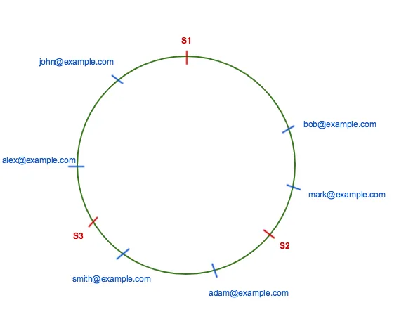

Consistent Hashing
Consistent hashing idea was introduced in paper Consistent Hashing and Random Trees: Distributed Caching Protocols for Relieving Hot Spots on the World Wide Web which was released in the year 1997. Akamai distributed content delivery network uses the approach described in the paper.
In 2007, consistent hashing was used in two published works
After that it has been used in many other distributed system like Cassandra, Riak etc.
Consistent hashing is a special kind of hashing which uses a hash function which changes minimally as the range of hash functions changes.
We will first start with hashing and why it is required. Then we will see distributed hashing and what are the problems it faces and how consistent hashing fixes those problems.
What is Hashing? Link to heading
Hashing is the process of mapping one piece of data — typically an arbitrary size object to another piece of data of fixed size, typically an integer, known as hash code or simply hash. A function is usually used for mapping objects to hash code known as a hash function.
For example, a hash function can be used to map random size strings to some fixed number between 0 … N. Given any string it will always try to map it to any integer between 0 to N.
Suppose N is 100. Then for example, for any string hash function will always return a value between 0 to 100.
Hello —> 60 Hello World —> 40
There can be many possible strings which will map to the same integer. This is called collision. Common solutions for handling collision are Chaining and Open Addressing.
There are two kinds of hash functions cryptographic and non-cryptographic which are used for different purpose. Hash functions are used in combination with the hash table. Hash table or Hash Map is a common data structure in computer science which is used for constant time lookup.
Suppose we want to store employee records in such a way that, we can perform these operations efficiently.
- Insert or store an employee details
- Search or fetch an employee details by email
- Delete employee details by email
Let’s explore different data structure for the above use-case
Array: Link to heading
If we will use an array data structure to store that information, the worst-case time complexity for each operation would be O(n). Search can be optimized to O(logn) by storing sorted data and using binary search.
Linked list: Link to heading
If we will use linked list to store employee records then worst-case time for insert will be O(1) and search and delete will be O(n)
Binary Search Tree: Link to heading
If we will use balanced binary search tree to store these employee records then worst-case time for each operation will be O(log n).
Hash function and Array: Link to heading
Here is where hash function and hash table comes to rescue which provides constant time for all three operations.
Hash function can be used to hash object key (which is email) to an integer number of fixed size. We can then use array to store the employee details in such a way that, index i has employee details whose key hash value is i. But ideally the output range of hash functions are very large and it will be impractical and waste of memory to store objects in array.
Hash Table and Hash Function Link to heading
To fix that we can use a hash table. In hash table, we use fixed size array of N to map hash code of all keys. Perform modulo operation on hash of the key to get the array index.
index = hash(key) modulo N where N is the size of array.
Since there will be many keys which will map to the same index, a list or a bucket is attached to each index to store all objects mapping to the same index.
To add a new object, we hash the key, find the index and check the bucket at that index. If the object is not in the bucket then add it.
To find an object by key, hash the key and get the index and looks for the key in the bucket at that index.
Searches in the bucket are linear but a properly size hashed table will have a small number of objects per bucket resulting in constant time access.
Distributed Hashing: Link to heading
Suppose a number of employees kept growing and it becomes difficult to store all employee information in a hash table which can fit on a single computer. In that situation, we will try to distribute the hash table to multiple servers to avoid memory limitation of one server. Objects (and their keys) are distributed among several servers.
This kind of setup is very common for in-memory caches like Memcached, Redis etc.
Since there will be multiple servers, how do we determine which server will store a key? The simplest solution for this is to take the hash modulo of the number of servers.
For example, server = hash(key) modulo N where N is the number of servers.
To store a key, first hash the key to get the hash code, then apply modulo of the number of server to get the server in which we need to store the key.
Let’s take an example.
We have three servers and employees with the following emails.
Email Hash Server
john@example.com 89 2(S3)
mark@example.com 30 0(S1)
adam@examle.com 47 2(S3)
smith@example.com 52 1(S2)
alex@example.com 75 0(S1)
bob@example.com 22 1(S2)
Suppose three servers are S1, S2, and S3, each will have an equal number of keys. If we need to store a new key, we can do the same and store it in one of the server depending on the output of server = hash (key) modulo 3. So far so good.
Rehashing Link to heading
But for some reason suppose one of the servers (S3) crashed, it’s no longer able to accept a request. Now we are only left with two servers. If there is a request for john@example.com, then server number will be S2 ( 89 modulo 2 = 1) and it will be a cache miss and that object will be again fetched from the origin and stored in S2. Let’s rehash all the keys and see how it looks like.
Email Hash Server
john@example.com 89 1(S2)
mark@example.com 30 0(S1)
adam@examle.com 47 1(S2)
smith@example.com 52 0(S1)
alex@example.com 75 1(S2)
bob@example.com 22 0(S1)
The server location for almost all keys changed, not only for the keys from S3. This will increase the load on origin in case of caching servers as there will be cache miss of keys and all of them needs to be rehashed. This is known as rehashing problem.
Consistent Hashing Link to heading
Consistent hashing solves the problem of rehashing by providing a distribution scheme which does not directly depend on the number of servers.
Consistent Hashing is a distributed hashing scheme that operates independently of the number of servers or objects in a distributed hash table by assigning them a position on an abstract circle, or hash ring. This allows servers and objects to scale without affecting the overall system.
Suppose our hash function output range in between zero to 2**32 or INT_MAX, then this range is mapped onto the hash ring so that values are wrapped around. All keys and servers are hashed using the same hash function and placed on the edge of the circle. To find out which server to ask for a given key or store a given key, we need to first locate the key on the circle and move in a clockwise direction until we find a server.
Let’s use the above example and place them on the hash ring. In this case, the minimum value on the circle is 0 and the maximum value is 100.

According to consistent hashing rule, bob@example.com and mark@example.com are on server S2, smith@example.com and adam@example.com are on server S3 and alex@example.com and john@example.com are on server S1.
In consistent hashing when a server is removed or added then the only key from that server are relocated. For example, if server S3 is removed then, all keys from server S3 will be moved to server S1 but keys stored on server S1 and S2 are not relocated. But there is one problem when server S3 is removed then keys from S3 are not equally distributed among remaining servers S1 and S2. They were only assigned to server S1 which will increase the load on server S1.
To evenly distribute the load among servers when a server is added or removed, it creates a fixed number of replicas ( known as virtual nodes) of each server and distributed it along the circle. So instead of server labels S1, S2 and S3, we will have S10 S11…S19, S20 S21…S29 and S30 S31…S39. The factor for a number of replicas is also known as weight, depends on the situation.
All keys which are mapped to replicas Sij are stored on server Si. To find a key we do the same thing, find the position of the key on the circle and then move forward until you find a server replica. If server replica is Sij then the key is stored in server Si.
Suppose server S3 is removed, then all S3 replicas with labels S30 S31 … S39 must be removed. Now the objects keys adjacent to S3X labels will be automatically re-assigned to S1X and S2X. All keys originally assigned to S1 and S2 will not be moved.
Similar things happen if we add a server. Suppose we want to add a server S4 as a replacement of S3 then we need to add labels S40 S41 … S49. In the ideal case, one-third of keys from S1 and S2 will be reassigned to S4.
In general, only the K/N number of keys are needed to remapped when a server is added or removed. K is the number of keys and N is the number of servers ( to be specific, maximum of the initial and final number of servers)